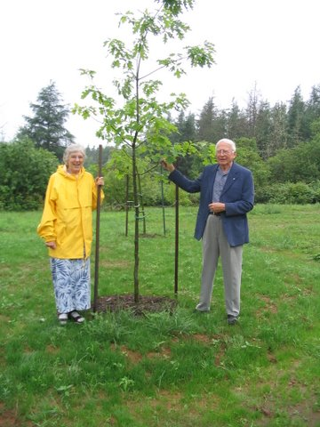

No. 73 August 28, 2007
Living Memorial Trust Established
The Wood Islands entrance to Trails PEI looks different today, and will be significantly different in 20 years, thanks to the planting of two clusters of native red oak trees. The planting is the first initiative of the Community Foundation of Prince Edward Island under the newly established Living Memorial Trust from which grants will be made for the purpose of enhancing public spaces throughout the Island.
The Living Memorial Trust was established through the efforts of the Keuper Family to remember the life of Dr. Charles Keuper, a physician who came to PEI in 1979 after his retirement and worked tirelessly to protect and enhance the Island’s natural beauty. Dr. Charles Keuper was born in Schulenburg, Texas, received his higher education at Elmhurst College, Illinois and the University of Texas. After a stint as a Medical Officer with the United States Army in Japan, Dr. Keuper opened a practice in Boston and taught for a number of years at Harvard Medical School. Upon retirement, the Keuper family set up residence in Wood Islands.
Living Memorials are more than just a tribute; living memorials enhance and beautify our environment, provide shelter for wild life, reduce erosion and improve the quality of the air we breathe. Grants may be made for the enhancement of any public space, however, the initial focus will be on trail entrances.

Elinore (Mrs. Charles) Keuper and Don Glendenning stand beside the newly planted Island oak tree at the entrance to the confederation Trail at wood Islands.
Contributions to The Living Memorial Trust are made to mark a milestone in the life of a person or organization; milestones include births, deaths, retirements, Mother’s Day or Father’s Day, part of a family reunion, or simply as a thank you to a very special person. Donors will be given a receipt to be used when filing Income Tax returns in both Canada and the USA
General contributions allow for plantings in any public space, however, arrangements may also be made for plantings of interest to the donor and may include a memorial plaque.
Contact the Community Foundation, 892-3440 for more information.
_______________________________________
The Community Foundation News is an informal newsletter, in electronic form only, edited and published by, and at the whim of, Don Glendenning. Think of it as a letter from a friend. Forward this to others who may be interested. For further information, check our website, www.cfpei.ca or Email me at: don@glendenning.net